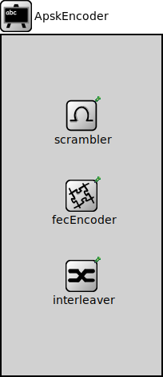

Package: inet.physicallayer.wireless.apsk.bitlevel
ApskEncoder
compound moduleThis module is part of a simple hypothetical layered transmitter. It computes the bit domain representation from the packet domain representation by applying the configured scrambling, forward errror correction encoding, and interleaving.
<b>See also:</b> ~ApskDecoder, ~ApskLayeredReceiver.
Usage diagram
The following diagram shows usage relationships between types. Unresolved types are missing from the diagram.
Inheritance diagram
The following diagram shows inheritance relationships for this type. Unresolved types are missing from the diagram.
Properties
| Name | Value | Description |
|---|---|---|
| display | i=block/blackboard | |
| class | ApskEncoder |
Source code
// // This module is part of a simple hypothetical layered transmitter. It computes // the bit domain representation from the packet domain representation by applying // the configured scrambling, forward errror correction encoding, and interleaving. // // @see ~ApskDecoder, ~ApskLayeredReceiver. // module ApskEncoder like IEncoder { parameters: @display("i=block/blackboard"); @class(ApskEncoder); submodules: scrambler: <default("")> like IScrambler if typename != "" { @display("p=100,100"); } fecEncoder: <default("")> like IFecCoder if typename != "" { @display("p=100,200"); } interleaver: <default("")> like IInterleaver if typename != "" { @display("p=100,300"); } }File: src/inet/physicallayer/wireless/apsk/bitlevel/ApskEncoder.ned
 This documentation is released under the Creative Commons license
This documentation is released under the Creative Commons license